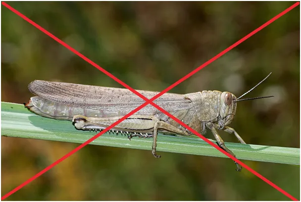
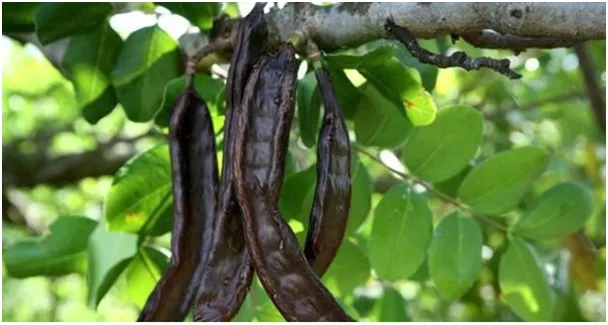
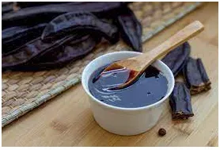

Czekoladowa dieta pustelników.

Pojawiają się głosy, że w Biblii szarańcza jest dopuszczona jako pokarm i jest to prawda. W Księdze Kapłańskiej w rozdz. 11 jest na liście gatunków jadalnych. Jest sporo argumentów, że św. Jan Chrzciciel żywił się "miodem i szarańczą", to cytat: Mt, 3, 1-12. I tu jest zmyłka. Chodzi tu o ceratonia siliqua, czyli szarańczyn strąkowy, inaczej chleb świętojański.

Te pyszne strąki można przerobić na syrop albo na mąkę, wychodzi z tego ciasto jakby było z czekolady nieznanej w starożytności. Dieta św. Jana Chrzciciela była optymalna i smaczna. Sam zajadam się "keçiboynuzu pekmezi", czyli syropem z tej rośliny. Starożytni nazwali to szarańczynem, Turcy "kozią szyją", bo kozy potrafią ekstremalnie wyciągnąć szyję, aby sięgnąć do strąków na drzewie. Szarańcza może być ratunkiem w głodzie, gdy plaga niszczy zbiory. My nie wchodzimy w to, bo pszenica ciągle tanieje

Szarańczyn jest pokarmem pustelników bo rośnie w lesie na dziko i jest darem niebios, dosłownie.
Paweł Klimczewski